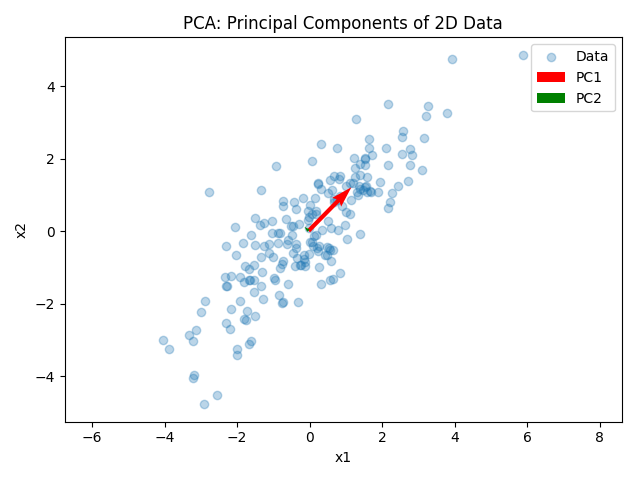

主成分分析（PCA）
主成分分析（Principal Component Analysis: PCA）は、多くの変数を持つデータをより少ない次元で表現するための教師なし学習手法です。元の変数を線形変換することで、新しい軸（主成分）に沿ってデータの分散を最大化します。
PCA の基本
PCA は、データをより少ない次元に圧縮することで可視化やノイズ除去を行います。文献では「次元削減の最も基本的な手法」「多変量データをより少数のパラメータに圧縮」「データをより少ない軸で説明するための座標回転」といった特徴が挙げられています【471792294869526†L65-L75】。
主成分は互いに直交しており、第1 主成分はデータの分散を最もよく説明する方向、第2 主成分は第1 主成分と直交し次に分散を説明する方向を表します。データをこれらの主成分に射影することで、元の次元数を減らして重要な構造を捉えることができます。

手順と応用
- データを平均0にセンタリングする。
- 共分散行列を計算し、固有値と固有ベクトルを求める。
- 固有値の大きい順に固有ベクトルを並べ、上位 k 個を主成分として採用する。
- データをこれらの主成分に射影し、新しい低次元表現を得る。
PCA は次元削減だけでなく、ノイズ除去やデータの可視化、特徴抽出にも利用されます。